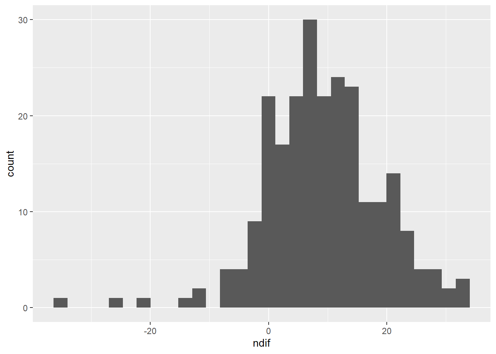
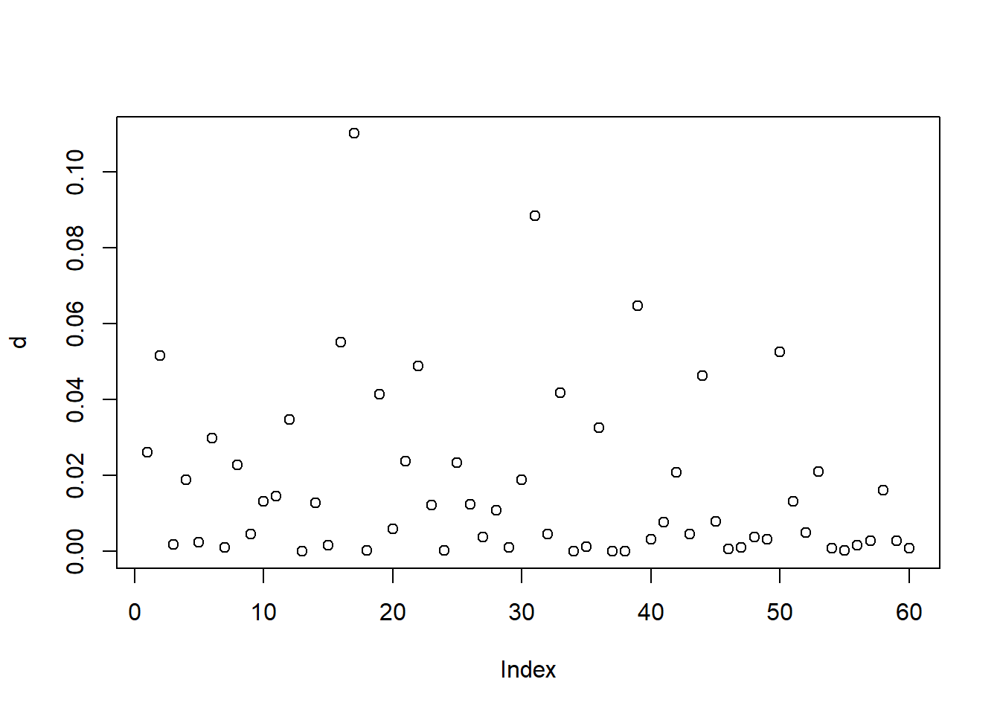
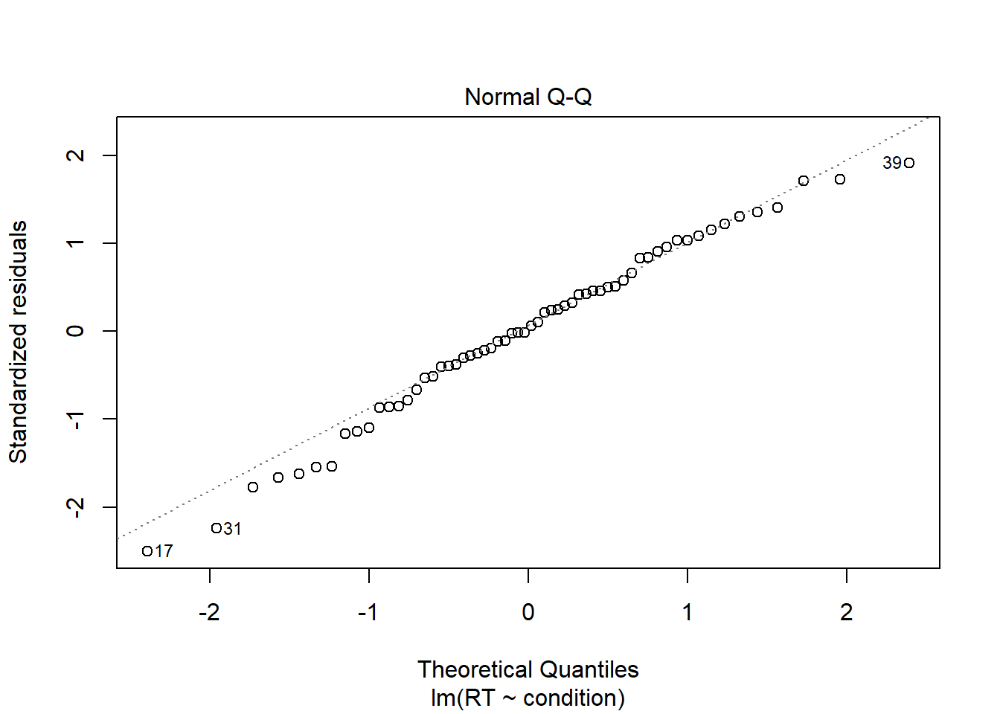
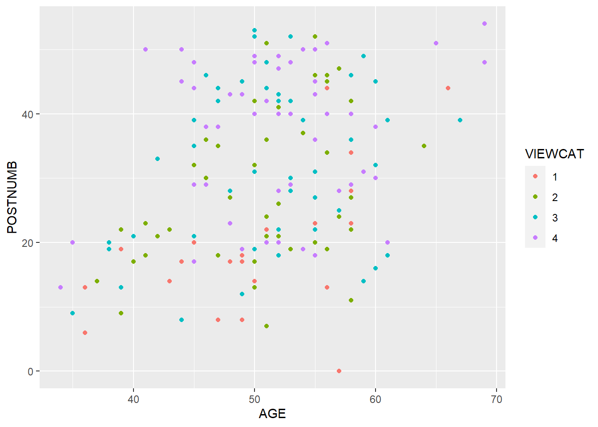

1.5 In-Class Exercises
During this practical, you will work through some exercises about ANOVA, ANCOVA, and regression.
- Note that ANOVA and ANCOVA are special cases of regression.
- Or, more accurately, ANOVA, ANCOVA, and regression are all different flavors of the general linear model.
If you need to refresh your knowledge on ANOVA, ANCOVA, or regression consider the resources listed in the Background knowledge section.
1.5.1 Part 1: Data Exploration
1.5.1.1
Open the file Sesam.sav:
## Load the 'foreign' library for reading SPSS files:
library(foreign)
## Load the 'Sesam.sav' data into an object called 'sesam':
sesam <- read.spss("sesam.sav", to.data.frame = TRUE, use.value.labels = FALSE)This file is part of a larger dataset that evaluates the impact of the first year of the Sesame Street television series. Sesame Street is mainly concerned with teaching preschool related skills to children in the 3–5 year age range.
The following variables will be used in this exercise:
- age: measured in months
- prelet: knowledge of letters before watching Sesame Street (range 0–58)
- prenumb: knowledge of numbers before watching Sesame Street (range 0–54)
- prerelat: knowledge of relations before watching Sesame Street (range 0–17)
- peabody: vocabulary maturity before watching Sesame Street (range 20–120)
- postnumb: knowledge of numbers after a year of Sesame Street (range 0–54)
Note: Unless otherwise noted, the following questions refer to the sesam
data and the above variables.
1.5.1.2
What is the measurement level of each variable?
Hint: The output of the str() function should be helpful here.
Click for explanation
## Examine the data structure:
str(sesam)## 'data.frame': 240 obs. of 8 variables:
## $ id : num 1 2 3 4 5 6 7 8 9 10 ...
## $ age : num 66 67 56 49 69 54 47 51 69 53 ...
## $ prelet : num 23 26 14 11 47 26 12 48 44 38 ...
## $ prenumb : num 40 39 9 14 51 33 13 52 42 31 ...
## $ prerelat: num 14 16 9 9 17 14 11 15 15 10 ...
## $ peabody : num 62 80 32 27 71 32 28 38 49 32 ...
## $ postnumb: num 44 39 40 19 54 39 44 51 48 52 ...
## $ gain : num 4 0 31 5 3 6 31 -1 6 21 ...
## - attr(*, "codepage")= int 65001All variables are numeric.
1.5.1.3
- What is the average age in the sample?
- What is the age range (youngest and oldest child)?
Hint: Use tidySEM::descriptives()
Click for explanation
As in the take home exercises, you can use the descriptives() function from
the tidySEM package to describe the data:
library(tidySEM)
descriptives(sesam)1.5.1.4
- What is the average gain in knowledge of numbers?
- What is the standard deviation of this gain?
Hints:
- You will need to compute the gain and save the change score as a new object.
- You can then use the base-R functions mean() and sd() to do the calculations.
Click for explanation
Create a new variable that represents the difference between pre- and post-test scores on knowledge of numbers:
sesam$ndif <- sesam$postnumb - sesam$prenumbCompute the mean and SD of the change score:
mean(sesam$ndif)## [1] 9.158333sd(sesam$ndif)## [1] 9.6824011.5.1.5
- Create an appropriate visualization of the gain scores you computed in 1.5.1.4.
- Justify your choice of visualization.
Hint: Some applicable visualizations are explained in 0.9.
Click for explanation
library(ggplot2)
## Create an empty baseline plot object:
p <- ggplot(sesam, aes(x = ndif))
## Add some appropriate geoms:
p + geom_histogram()
p + geom_density()
p + geom_boxplot()
1.5.1.6
- Create a visualization that provides information about the bivariate relationship between two of the variables.
- Justify your choice of visualization.
Hint: Again, Section 0.9 may provide some useful insights.
Click for explanation
## Create a scatterplot of the pre- and post-test number knowledge
ggplot(sesam, aes(x = prenumb, y = postnumb)) + geom_point()
1.5.2 Part 2: Regression Analysis
1.5.2.1
Are there significant, bivariate associations between postnumb and the following variables?
- age
- prelet
- prenumb
- prerelat
- peabody
Use Pearson correlations to answer this question.
- You do not need to check the assumptions here (though you would in real life).
Hint: The base-R cor.test() function and the corr.test() function from the
psych package will both conduct hypothesis tests for a correlation
coefficients (the base-R cor() function only computes the coefficients).
Click for explanation
library(psych)
## Test the correlations using psych::corr.test():
corr.test(
sesam[ , c("postnumb", "age", "prelet", "prenumb", "prerelat", "peabody")]
)## Call:corr.test(x = sesam[, c("postnumb", "age", "prelet", "prenumb",
## "prerelat", "peabody")])
## Correlation matrix
## postnumb age prelet prenumb prerelat peabody
## postnumb 1.00 0.34 0.50 0.68 0.54 0.52
## age 0.34 1.00 0.33 0.43 0.44 0.29
## prelet 0.50 0.33 1.00 0.72 0.47 0.40
## prenumb 0.68 0.43 0.72 1.00 0.72 0.61
## prerelat 0.54 0.44 0.47 0.72 1.00 0.56
## peabody 0.52 0.29 0.40 0.61 0.56 1.00
## Sample Size
## [1] 240
## Probability values (Entries above the diagonal are adjusted for multiple tests.)
## postnumb age prelet prenumb prerelat peabody
## postnumb 0 0 0 0 0 0
## age 0 0 0 0 0 0
## prelet 0 0 0 0 0 0
## prenumb 0 0 0 0 0 0
## prerelat 0 0 0 0 0 0
## peabody 0 0 0 0 0 0
##
## To see confidence intervals of the correlations, print with the short=FALSE option## OR ##
## Test the correlations using multiple cor.test() calls:
cor.test(sesam$postnumb, sesam$age)##
## Pearson's product-moment correlation
##
## data: sesam$postnumb and sesam$age
## t = 5.5972, df = 238, p-value = 5.979e-08
## alternative hypothesis: true correlation is not equal to 0
## 95 percent confidence interval:
## 0.2241066 0.4483253
## sample estimates:
## cor
## 0.3410578cor.test(sesam$postnumb, sesam$prelet)##
## Pearson's product-moment correlation
##
## data: sesam$postnumb and sesam$prelet
## t = 8.9986, df = 238, p-value < 2.2e-16
## alternative hypothesis: true correlation is not equal to 0
## 95 percent confidence interval:
## 0.4029239 0.5926632
## sample estimates:
## cor
## 0.5038464cor.test(sesam$postnumb, sesam$prenumb)##
## Pearson's product-moment correlation
##
## data: sesam$postnumb and sesam$prenumb
## t = 14.133, df = 238, p-value < 2.2e-16
## alternative hypothesis: true correlation is not equal to 0
## 95 percent confidence interval:
## 0.6002172 0.7389277
## sample estimates:
## cor
## 0.6755051cor.test(sesam$postnumb, sesam$prerelat)##
## Pearson's product-moment correlation
##
## data: sesam$postnumb and sesam$prerelat
## t = 9.9857, df = 238, p-value < 2.2e-16
## alternative hypothesis: true correlation is not equal to 0
## 95 percent confidence interval:
## 0.4475469 0.6268773
## sample estimates:
## cor
## 0.5433818cor.test(sesam$postnumb, sesam$peabody)##
## Pearson's product-moment correlation
##
## data: sesam$postnumb and sesam$peabody
## t = 9.395, df = 238, p-value < 2.2e-16
## alternative hypothesis: true correlation is not equal to 0
## 95 percent confidence interval:
## 0.4212427 0.6067923
## sample estimates:
## cor
## 0.5201281.5.2.2
Do age and prenumb explain a significant proportion of the variance in postnumb?
- What statistic did you use to justify your conclusion?
- Interpret the model fit.
Hints:
- The
lm()function (short for linear model) estimates linear regression models. - The
summary()function provides relevant summary statistics for the model.
Click for explanation
results <- lm(postnumb ~ age + prenumb, data = sesam)
summary(results)##
## Call:
## lm(formula = postnumb ~ age + prenumb, data = sesam)
##
## Residuals:
## Min 1Q Median 3Q Max
## -38.130 -6.456 -0.456 5.435 22.568
##
## Coefficients:
## Estimate Std. Error t value Pr(>|t|)
## (Intercept) 7.4242 5.1854 1.432 0.154
## age 0.1225 0.1084 1.131 0.259
## prenumb 0.7809 0.0637 12.259 <2e-16 ***
## ---
## Signif. codes: 0 '***' 0.001 '**' 0.01 '*' 0.05 '.' 0.1 ' ' 1
##
## Residual standard error: 9.486 on 237 degrees of freedom
## Multiple R-squared: 0.4592, Adjusted R-squared: 0.4547
## F-statistic: 100.6 on 2 and 237 DF, p-value: < 2.2e-16- Yes, age and prenumb explain a significant amount of variability in postnumb (\(R^2 = 0.459\), \(F[2, 237] = 100.629\), \(p < 0.001\)).
- We use the F statistic for the overall test of model fit to support this conclusion.
- The variables age and prenumb together explain 45.9% of the variability in postnumb.
1.5.2.3
Write the null and alternative hypotheses for tested in 1.5.2.2.
Click for explanation
Since we are testing for explained variance, our hypotheses concern the \(R^2\).
\[ \begin{align*} H_0: R^2 = 0\\ H_1: R^2 > 0 \end{align*} \]
Note that this is a directional hypotheses because the \(R^2\) cannot be negative.
1.5.2.4
Consider the path model below.
- How many regression coefficients are estimated in this model?
- How many variances are estimated?
- How many covariances are estimated?
- How many degrees of freedom does this model have?
Hint: As you learned in Lecture 1, \(df = N_{obs} – N_{par}\).

1.5.2.5
Consider a multiple regression analysis with three continuous independent variables: scores on tests of language, history, and logic, and one continuous dependent variable: score on a math test. We want to know if scores on the language, history, and logic tests can predict the math test score.
- Sketch a path model that you could use to answer this question
- How many regression parameters are there?
- How many variances could you estimate?
- How many covariances could you estimate?
- How many degrees of freedom does this model have?
1.5.3 Part 3: ANOVA
1.5.3.1
Load the Drivers.sav data.
# Read the data into a data frame named 'drivers':
drivers <- read.spss("Drivers.sav", to.data.frame = TRUE)In this section, we will use ANOVA to evaluate the following research question:
- Does talking on the phone interfere with people’s driving skills?
These data come from an experiment. The condition variable represents the three experimental conditions:
- Hand-held phone
- Hands-free phone
- Control (no phone)
We will use condition as the IV in our ANOVA models. The DV, RT, represents the participant’s reaction time (in milliseconds) during a driving simulation.
ANOVA vs. Linear Regression
As you may know, the mathematical model underlying ANOVA is just a linear regression model with nominal IVs. So, in terms of the underlying statistical models, there is no difference between ANOVA and regression; the differences lie in the focus of the analysis.
- ANOVA is really a type of statistical test wherein we are testing hypotheses
about the effects of some set of nominal grouping factors on some continuous
outcome.
- When doing an ANOVA, we usually don’t interact directly with the parameter estimates from the underlying model.
- Regression is a type of statistical model (i.e., a way to represent a
univariate distribution with a conditional mean and fixed variance).
- When we do a regression analysis, we primarily focus on the estimated parameters of the underling linear model.
When doing ANOVA in R, we estimate the model exactly as we would for linear regression; we simply summarize the results differently.
1.5.3.2
Perform the ANOVA to test the above research question.
Hint: After estimating the model with lm(), you can use the anova()
function to compute the sums-of-squares and significance tests for each factor
in your model.
Click for explanation
## Estimate the underlying model:
results <- lm(RT ~ condition, data = drivers)
## Summarize the model as a regression analysis:
summary(results)##
## Call:
## lm(formula = RT ~ condition, data = drivers)
##
## Residuals:
## Min 1Q Median 3Q Max
## -317.50 -71.25 2.98 89.55 243.45
##
## Coefficients:
## Estimate Std. Error t value Pr(>|t|)
## (Intercept) 654.50 29.08 22.506 <2e-16 ***
## conditionhands-free -36.95 41.13 -0.898 0.3727
## conditioncontrol -100.75 41.13 -2.450 0.0174 *
## ---
## Signif. codes: 0 '***' 0.001 '**' 0.01 '*' 0.05 '.' 0.1 ' ' 1
##
## Residual standard error: 130.1 on 57 degrees of freedom
## Multiple R-squared: 0.09729, Adjusted R-squared: 0.06562
## F-statistic: 3.072 on 2 and 57 DF, p-value: 0.05408## Summarize the model as an ANOVA:
anova(results)Of course the results of any analysis are only valid if the assumptions of the analysis/model are satisfied. In particular, we should probably check at least three conditions:
- There are no overly influential cases
- The residual variance is homogonous across groups
- The residuals are normally distributed
1.5.3.3
Check for influential cases.
Hint: You can use the cooks.distance() function to compute Cook’s Distance
statistic for each observation.
- Observations with Cook’s D values substantially larger than, and qualitatively distinct from, the rest of the data may be overly influential.
- You can evaluate the relative sizes of the distances by making an index plot of the estimated distance statistics.
Click for explanation
## Compute the Cook's distances:
d <- cooks.distance(results)
## Plot the distances:
plot(d)
In the figure above, we’re looking for any distances that clearly “stand out from the crowd”.
- None of the distances in the above figure look notable.
- We do not see evidence of influential observations.
1.5.3.4
Check the normality of the residuals.
Hints:
- One of the best ways to check the normality of residuals is with a Normal QQplot.
- We can easily create a Normal QQ-Plot of the residuals by plotting the
resultsobject from 1.5.3.2.
Click for explanation
plot(results, 2)
In the QQ-Plot created above, we want to see all of the points follow the diagonal, dashed line.
- Perfectly normal residuals will fall exactly along this line
- Deviations away from the line indicate devations from normality.
The residuals in this figure look quite good.
- We only see very minor deviations from the idealized line.
- The residuals appear to be more-or-less normally distributed.
1.5.3.5
Check the homogeneity of the residual variances.
Hints:
- A scale-location plot is one of the best ways to check the homogeneity of variances assumption.
- Plot an estimate of the residual variance against the predicted values
- Any trend indicates differences in residual variance between groups
- Plotting the
resultsobject from 1.5.3.2 will also produce a scale-location plot.
Click for explanation
plot(results, 3)
The red line in this figure is a loess line which represents the trend of the plotted data.
- If this loess line is flat, there is no evidence of differences in the residual variances between groups.
- Trends in this line indicate violations of the homogeneity assumption.
In this case, the line is pretty much flat and we have little-to-no evidence of heterogeneous residual variances.
1.5.3.6
Summarize your conclusions regarding the assumption.
- Are the assumptions satisfied?
- Can we trust the model results?
Click for explanation
There are no observations that stand out as particularly influential. Furthermore, we have no evidence of heterogeneous residual variances or substantial violations of normality for the residuals. Hence, the assumptions appear to be satisfied, and we can trust the conclusions of our analysis.
1.5.3.7
Use your results to answer the research question.
Click for explanation
anova(results)The effect of condition on RT was nonsignificant (\(F[2, 57] = 3.07\), \(p = 0.054\)). Therefore, based on these results, we do not have evidence for an effect of mobile phone usage on driving performance.
1.5.4 Part 4: ANCOVA
We will now conduct an ANCOVA to assess the following research question.
- Are there differences in reaction times between the phone conditions after controlling for age?
As with ANOVA, the statistical model underlying an ANCOVA is simply a linear regression model. The model for an ANCOVA, however, includes at least one continuous covariate in addition to the categorical IVs.
Consequently, when we conduct ANCOVA in R, we again use the lm() function to
estimate the model.
1.5.4.1
Estimate the ANCOVA model needed to test the above research question.
Click for explanation
## Estimate the model:
results <- lm(RT ~ condition + age, data = drivers)
## Conduct the statistical tests:
anova(results)ANCOVA and Interactions
As you can see above, when we run an ANCOVA, we’re just estimating a multiple linear regression model. We call the analysis ANCOVA because we are interested in a specific hypothesis.
- Our substantive interest lies in the categorical IVs.
- The continuous covariates are uninteresting, nuisance variables that we are controlling for to get better estimates of the interesting treatment effects.
One implication of this hypothesis is the absence of any interaction between the covariates and grouping factors.
- If the covariate moderates the treatment effect, the covariate has a direct impact on the substantively interesting group differences. Such a covariate is not a covariate; it’s a substantively integral feature of the model.
If we want to report our analysis as an ANCOVA, we need to show that the covariate effects are equivalent in each group. In other words, there is no interaction between the grouping factors and the covariates.
1.5.4.2
Test for an interaction between age and condition in the model from 1.5.4.1.
- What is your conclusion?
- Can we report our analysis as an ANCOVA?
Hint: You can include an interaction term in an R formulas ‘multiplying’ the two variable names using the * operator.
Click for explanation
## Add the interaction between 'age' and 'condition' to the model:
results_int <- lm(RT ~ condition * age, data = drivers)
## Conduct the hypothesis tests.
anova(results_int)The interaction between condition and age is not significant (\(F[2, 54] = 1.07\), \(p = 0.349\)). Therefore, the covariate effects should be more-or-less equivalent in each group, and we can report our analysis as an ANCOVA.
1.5.4.3
Answer the research from above question.
- If you did find a significant, partial effect of condition, do a post hoc comparison of pairwise mean differences to see which groups showed significantly different reaction times, after controlling for age.
- Use Tukey’s HSD correction for all pairwise comparisons to control the Type I error rate.
Hints:
- You can conduct the appropriate post hoc test with the
TukeyHSD()function. - The
TukeyHSD()function only works on models estimated using theaov()function (which is the same aslm()but summarizes the results in ANOVA style). - To satisfy
TukeyHSD(), you can either rerun your model withaov()or convert yourresultsobject to the correct format viaaov(results).
Click for explanation
## Check the hypothesis tests for the ANCOVA from above:
anova(results)## Run the post hoc comparisons:
TukeyHSD(aov(results))## Tukey multiple comparisons of means
## 95% family-wise confidence level
##
## Fit: aov(formula = results)
##
## $condition
## diff lwr upr p adj
## hands-free-hand-held -36.95 -118.5708 44.67082 0.5242511
## control-hand-held -100.75 -182.3708 -19.12918 0.0119407
## control-hands-free -63.80 -145.4208 17.82082 0.1533777After controlling for age, phone usage significantly affects driving performance (\(F[2, 56] = 4.52\), \(p = 0.015\)). Specifically, the hand-held condition has a significant higher reaction time than the control condition.
1.5.5 Part 5: Back to Regression
As we saw above, we can use ANOVA or ANCOVA to test hypotheses about differences between groups in some continuous outcome. AN(C)OVA is a type of statistical test, though, not a type of model. The statistical model underlying an AN(C)OVA is just a linear regression model. Since this class is about statistical modeling, it won’t do us much good to keep thinking in terms of statistical tests; we’re better off approaching these problems from a modeling perspective.
We can just as easily make the inferences from above by working directly within a regression modeling framework. In this section, we will explore linear regression models with categorical predictors.
1.5.5.1
Load the Sesam2.sav data.
# Read the data into an object called 'sesam2':
sesam2 <- read.spss("Sesam2.sav", to.data.frame = TRUE)1.5.5.2
VIEWCAT is a nominal grouping variable, but it is represented as a numeric
variable in the sesam2 data.
- Convert VIEWCAT into a factor.
- Make sure that
VIEWCAT = 1is the reference group.
Hints:
- You can identify the reference group with the
levels()orcontrasts()functions. - The reference group is the group labelled with the first level printed by
levels(). - When you run
contrasts(), you will see a pattern matrix that defines a certain dummy coding scheme. The reference group is the group that has zeros in each column of this matrix. - If you need to change the reference group, you can use the
relevel()function.
Click for explanation
## Convert 'VIEWCAT' to a factor:
sesam2$VIEWCAT <- factor(sesam2$VIEWCAT)
## Check the reference group:
levels(sesam2$VIEWCAT)## [1] "1" "2" "3" "4"contrasts(sesam2$VIEWCAT)## 2 3 4
## 1 0 0 0
## 2 1 0 0
## 3 0 1 0
## 4 0 0 11.5.5.3
Estimate a multiple regression model wherein VIEWCAT predicts POSTNUMB.
- Summarize the model.
- Interpret the estimates.
Click for explanation
results <- lm(POSTNUMB ~ VIEWCAT, data = sesam2)
summary(results)##
## Call:
## lm(formula = POSTNUMB ~ VIEWCAT, data = sesam2)
##
## Residuals:
## Min 1Q Median 3Q Max
## -25.474 -7.942 0.240 8.526 25.240
##
## Coefficients:
## Estimate Std. Error t value Pr(>|t|)
## (Intercept) 18.760 2.316 8.102 8.95e-14 ***
## VIEWCAT2 9.331 2.900 3.218 0.00154 **
## VIEWCAT3 14.714 2.777 5.298 3.49e-07 ***
## VIEWCAT4 18.032 2.809 6.419 1.24e-09 ***
## ---
## Signif. codes: 0 '***' 0.001 '**' 0.01 '*' 0.05 '.' 0.1 ' ' 1
##
## Residual standard error: 11.58 on 175 degrees of freedom
## Multiple R-squared: 0.2102, Adjusted R-squared: 0.1967
## F-statistic: 15.53 on 3 and 175 DF, p-value: 5.337e-091.5.5.4
Use ggplot() to make a scatterplot with AGE on the x-axis and POSTNUMB on
the y-axis.
- Color the points according to the their VIEWCAT level.
- Save the plot object to a variable in your environment.
Hint: You can map color to the levels of a variable on your dataset by
assigning the variable names to the color argument of the aes() function in
ggplot().
Click for explanation
library(ggplot2)
## Add aes(..., color = VIEWCAT) to get different colors for each group:
p <- ggplot(sesam2, aes(x = AGE, y = POSTNUMB, color = VIEWCAT)) +
geom_point() # Add points for scatterplot
## Print the plot stored as 'p':
p
We assigned the global color aesthetic to the VIEWCAT variable, so the points are colored based on their group.
1.5.5.5
Add linear regression lines for each group to the above scatterplot.
Hints:
- You can add regression lines with
ggplot2::geom_smooth()- To get linear regression lines, set the argument
method = "lm" - To omit error envelopes, set the argument
se = FALSE
- To get linear regression lines, set the argument
Click for explanation
## Add OLS best-fit lines:
p + geom_smooth(method = "lm", se = FALSE)
The global color aesthetic assignment from above carries through to any additional plot elements that we add, including the regression lines. So, we also get a separate regression line for each VIEWCAT group.
1.5.5.6
How would you interpret the pattern of regression lines above?
Click for explanation
All the lines show a positive slope, so post-test number recognition appears to increase along with increasing age. The lines are not parallel, though. So, VIEWCAT may be moderating the effect of AGE on POSTNUMB.
Moderated Regression
Based on the figure we just created, we may want to test for moderation in our regression model. To do so, we need to add an interaction between AGE and VIEWCAT. The VIEWCAT factor is represented by 3 in our model, though. So, when we interact AGE and VIEWCAT, we will create 3 interaction terms.
To test the overall moderating influence of VIEWCAT, we need to conduct a multiparameter hypothesis test of all 3 interaction terms. One way that we can go about implementing such a test is through a hierarchical regression analysis entailing three steps:
- Estimate the additive model wherein we regress POSTNUMB onto AGE and VIEWCAT without any interaction.
- Estimate the moderated model by adding the interaction between AGE and VIEWCAT into the additive model.
- Conduct a \(\Delta R^2\) test to compare the fit of the two models.
1.5.5.7
Conduct the hierarchical regression analysis described above.
- Does VIEWCAT significantly moderate the effect of AGE on POSTNUMB?
- Provide statistical justification for your conclusion.
Click for explanation
## Estimate the additive model a view the results:
results_add <- lm(POSTNUMB ~ VIEWCAT + AGE, data = sesam2)
summary(results_add)##
## Call:
## lm(formula = POSTNUMB ~ VIEWCAT + AGE, data = sesam2)
##
## Residuals:
## Min 1Q Median 3Q Max
## -23.680 -8.003 -0.070 8.464 22.635
##
## Coefficients:
## Estimate Std. Error t value Pr(>|t|)
## (Intercept) -10.1056 6.5091 -1.553 0.12235
## VIEWCAT2 9.1453 2.7390 3.339 0.00103 **
## VIEWCAT3 13.8602 2.6294 5.271 3.98e-07 ***
## VIEWCAT4 16.9215 2.6636 6.353 1.79e-09 ***
## AGE 0.5750 0.1221 4.708 5.08e-06 ***
## ---
## Signif. codes: 0 '***' 0.001 '**' 0.01 '*' 0.05 '.' 0.1 ' ' 1
##
## Residual standard error: 10.94 on 174 degrees of freedom
## Multiple R-squared: 0.2995, Adjusted R-squared: 0.2834
## F-statistic: 18.6 on 4 and 174 DF, p-value: 9.642e-13## Estimate the moderated model and view the results:
results_mod <- lm(POSTNUMB ~ VIEWCAT * AGE, data = sesam2)
summary(results_mod)##
## Call:
## lm(formula = POSTNUMB ~ VIEWCAT * AGE, data = sesam2)
##
## Residuals:
## Min 1Q Median 3Q Max
## -23.8371 -8.2387 0.6158 8.7988 22.5611
##
## Coefficients:
## Estimate Std. Error t value Pr(>|t|)
## (Intercept) -18.7211 15.5883 -1.201 0.2314
## VIEWCAT2 9.9741 20.6227 0.484 0.6293
## VIEWCAT3 23.5825 19.3591 1.218 0.2248
## VIEWCAT4 34.3969 19.3600 1.777 0.0774 .
## AGE 0.7466 0.3074 2.429 0.0162 *
## VIEWCAT2:AGE -0.0175 0.4060 -0.043 0.9657
## VIEWCAT3:AGE -0.1930 0.3782 -0.510 0.6104
## VIEWCAT4:AGE -0.3416 0.3770 -0.906 0.3663
## ---
## Signif. codes: 0 '***' 0.001 '**' 0.01 '*' 0.05 '.' 0.1 ' ' 1
##
## Residual standard error: 10.99 on 171 degrees of freedom
## Multiple R-squared: 0.3046, Adjusted R-squared: 0.2762
## F-statistic: 10.7 on 7 and 171 DF, p-value: 3.79e-11## Test for moderation:
anova(results_add, results_mod)VIEWCAT does not significantly moderate the effect of AGE on POSTNUMB (\(F[3, 171] = 0.422\), \(p = 0.738\)).
1.5.5.8
Write the regression equations for the additive and moderated models from 1.5.5.7.
Click for explanation
Additive Model
\[ \begin{align*} Y_{postnumb} = \beta_0 + \beta_1 X_{view2} + \beta_2 X_{view3} + \beta_3 X_{view4} + \beta_4 X_{age} + \varepsilon \end{align*} \]
Moderated Model
\[ \begin{align*} Y_{postnumb} = \beta_0 + &\beta_1 X_{view2} + \beta_2 X_{view3} + \beta_3 X_{view4} + \beta_4 X_{age} +\\ &\beta_5 X_{view2} X_{age} + \beta_6 X_{view3} X_{age} + \beta_7 X_{view4} X_{age} + \varepsilon \end{align*} \]
1.5.5.9
Write the null and alternative hypotheses for the test of moderation you conducted in 1.5.5.7.
Click for explanation
\[ \begin{align*} H_0: \Delta R^2 = 0\\ H_1: \Delta R^2 > 0 \end{align*} \]
1.5.5.10
Write the regression equation for each of the four VIEWCAT groups.
Click for explanation
VIEWCAT 1:
\[ Y_{postnumb} = \beta_0 + \beta_4 X_{age} + \varepsilon \]
VIEWCAT 2:
\[ Y_{postnumb} = \beta_0 + \beta_1 X_{view2} + \beta_4 X_{age} + \beta_5 X_{view2} X_{age} + \varepsilon \]
VIEWCAT 3:
\[ Y_{postnumb} = \beta_0 + \beta_2 X_{view3} + \beta_4 X_{age} + \beta_6 X_{view3} X_{age} + \varepsilon \]
VIEWCAT 4:
\[ Y_{postnumb} = \beta_0 + \beta_3 X_{view4} + \beta_4 X_{age} + \beta_7 X_{view4} X_{age} + \varepsilon \]
1.5.5.11
Run the anova() function on only the moderated regression model from 1.5.5.7.
- Compare the result to the
anova()output from 1.5.5.7. - What do you notice when comparing the two
anova()outputs? - Does this comparison offer any insight into the relation between regression and AN(C)OVA?
Click for explanation
anova(results_mod)anova(results_add, results_mod)When we run the anova() function on only the moderated regression model, we
get ANCOVA-style tests like those we used in 1.5.4.2. The marginal test
for the interaction between AGE and VIEWCAT in this ANCOVA-style result is identical to the model comparison test from 1.5.5.7.
This comparison shows that the significance tests for marginal effects in an AN(C)OVA model can be equivalent to certain model comparison tests in a regression model.
- Indeed, although you cannot know this from only the examples explored here, any significance test in an AN(C)OVA can be reformulated as a comparison between two appropriately nested linear regression models.
End of In-Class Exercises 1